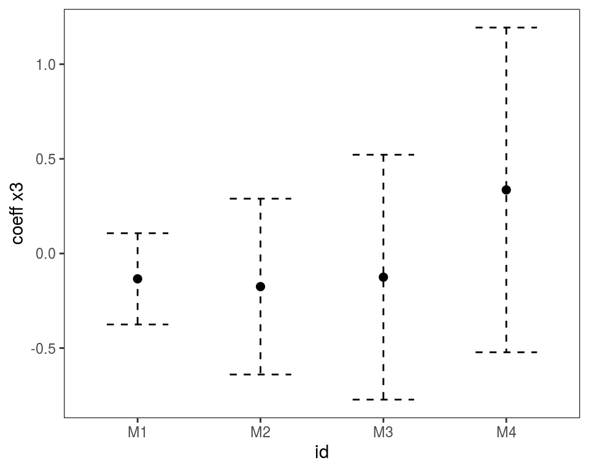
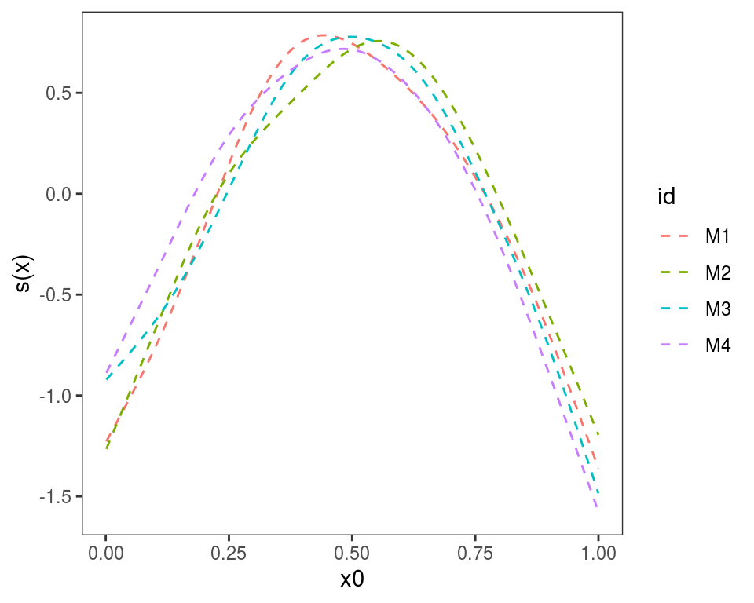

Miscellanea: things you can do in mgcViz
Matteo Fasiolo, Christian Capezza
March 04 2020
Source:vignettes/miscellanea.Rmd
miscellanea.RmdThe purpose of this document is detailing a number of potentially useful things you can do in mgcViz.
Accumulated local effect (ALE) plot for GAMs
As of version 0.1.6, mgcViz provides methods for computing and visualising accumulated local effects (ALE) for GAMs. See Apley and Zhu (2016) for details regarding this type of effects. Here we explain how such effects can be computed and plotted with mgcViz, while the section titled “Multinomial example” (below) provides an example where plotting ALE effects is more useful than plotting standard GAM effects (that is, the effects specified in the model formula via, e.g, s(x)).
Basic usage
We start by considering a quantile GAM model for electricity demand:
library(mgcViz)
data(UKload)
fit <- qgam(NetDemand ~ Dow + s(Posan, k = 20) + s(wM) + s(wM_s95), data = UKload, qu = 0.5)## Estimating learning rate. Each dot corresponds to a loss evaluation.
## qu = 0.5........doneWe visualise the ALE effect of smoothed temperature (wM_s95):
The plot above shows a centered ALE effect as in Apley and Zhu (2016), with the default layers. We can use a different level for centering and add some custom layers:
We can avoid centering (so that the plot starts at \(y = 0\)) and perform some posterior simulations:
We can also plot the ALE effect of factor covariates:
ALE methods work also for GAMLSS models (Stasinopoulos and Rigby, 2007), for instance:
set.seed(4124)
n <- 2e3
x <- runif(n, -2, 2); y <- runif(n, -2, 2);
# Residuals are heteroscedastic w.r.t. x
ob <- (x)^2 + (y)^2 + (0.2*abs(x) + 1) * rnorm(n)
b <- gamV(list(ob ~ s(x, k=15) + s(y, k=15), ~ s(x)), family = gaulss)
plot(ALE(b, x = "x", oind = 2, type = "response")) Above we are looking at the ALE effect of
Above we are looking at the ALE effect of x for the second element of the model output (oind = 2). Given that type == "response", we are looking at the reciprocal of the estimated standard deviation of the response variable (see ?gaulss for details).
Finally, ALE effects can be plotted also for models fitted with bam:
## Gu & Wahba 4 term additive modelMultinomial example
ALE effects are particularly useful when working with multinomial regression models, because the parametrisation used under such models makes difficult to quantify the effects of the covariates on the probabilities of each response category. For example, here we fit at a multinomial regression model with three categories and two linear predictors:
set.seed(14714)
n <- 2000
x <- runif(n)
# Both linear predictors increase with x
eta1 <- 2*x + 2*x^2
eta2 <- x + x^2
# Get probabilities for each x
p <- exp(cbind(0,eta1,eta2))
p <- p/rowSums(p)
# Simulate multinomial responses with these probabilities
y <- apply(p, 1, function(prob) sample(0:2, 1, prob = prob))
# Fit multinomial GAM
b <- gamV(list(y~s(x),~s(x)),family=multinom(K=2))We now plot the effects of variable x on the two linear predictors:
Both linear predictors are increasing with x, hence we might conclude that the frequencies of categories 1 and 2 is increasing with x. But an ALE plot for the probability of observing category 2:
plot(ALE(b, x = "x", oind = 3, type = "response", center = 2), nsim = 20) +
l_simLine() + l_fitLine() shows that the probability of this category is actually decreasing with x. This is because the linear predictor of category 1 (2*x + 2*x^2) is increasing at a faster rate than that of category 2 (x + x^2), as we increase x. In this simple example featuring a single covariate the fact that the probability of category 2 is decreasing with x can be seen simply by plotting the data:
but, when the number of covariates is greater than one, ALE plots can be very useful to assess the effect of the covariate on the actual probabilities.
Plotting effects of GAM models fitted on different data
Often we want to fit the same GAM model (same formula) to different data, or to the same data but using different tuning parameters. If we have fitted M models, we might want to plot the M version of each effect in the same plot. This can by done using plot.mgamViz, which takes as input a list of GAM models (again, the model formula must be that same). Here we simulate M=4 data sets:
library(mgcViz) # version 0.1.2 or later
M <- 4
n <- 1000
dat <- list()
for(ii in 1:M){
dat[[ii]] <- gamSim(1,n=n,dist="normal",scale=ii) # Notice that scale = ii
}We estimate M models and we put them in a list:
# Estimating model on each dataset
mods <- list()
for(ii in 1:M){
mods[[ii]] <- gamV(y~s(x0)+s(x1, x2)+x3, data = dat[[ii]])
}We give names to the list, which will be used to identify the plotted effects, and we plot:

## Warning in f(...): Raster pixels are placed at uneven horizontal intervals
## and will be shifted. Consider using geom_tile() instead.## Warning in f(...): Raster pixels are placed at uneven vertical intervals
## and will be shifted. Consider using geom_tile() instead.
 Alternatively, we could use plot(getViz(mods)) to convert the list to an object of class mgamViz. We can also use custom layers:

References
Apley, D.W., and Zhu, J, 2016. Visualizing the effects of predictor variables in black box supervised learning models. arXiv preprint arXiv:1612.08468.
Fasiolo, M., Nedellec, R., Goude, Y. and Wood, S.N., 2019. Scalable visualization methods for modern generalized additive models. Journal of computational and Graphical Statistics, pp.1-9.
Stasinopoulos, D.M. and Rigby, R.A., 2007. Generalized additive models for location scale and shape (GAMLSS) in R. Journal of Statistical Software, 23(7), pp.1-46.